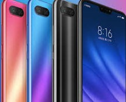

Information About Mobile Phones
The mobile phone--also known as the cellphone--has infiltrated our daily lives, becoming the quintessential communication device. The mobile phone has developed over time,becoming more useful with every new capability. Most versions today can fit into your back pocket with ease. Much more than a pone, mordern-day mobile phones help keep us organized and connected with the many fratures the offer.
Early History
Third and fourth generation mobile phones continue to advance technologically. Mobile phone now boats a wide variety of feature outside of simply placing. phone calls.These features all depend on the type of phone you own, and the sevice contract you enter into. Modern day mobile phones can send text messages,surf sthe Internet, downloat music, movies,doucments, files.and more. Some phones allow you to play video games, while others have built-in GPS devices, allowing you to locate mearby restaunats, attractions hotels and other points of interest. Mobile phones can also record live video and take photos. In short, the mobile phone has tranformed from a simple calling device intoa full-blown entertainment and information system.
Early History
Third and fourth generation mobile phones continue to advance technologically. Mobile phone now boats a wide variety of feature outside of simply placing. phone calls.These features all depend on the type of phone you own, and the sevice contract you enter into. Modern day mobile phones can send text messages,surf sthe Internet, downloat music, movies,doucments, files.and more. Some phones allow you to play video games, while others have built-in GPS devices, allowing you to locate mearby restaunats, attractions hotels and other points of interest. Mobile phones can also record live video and take photos. In short, the mobile phone has tranformed from a simple calling device intoa full-blown entertainment and information system.